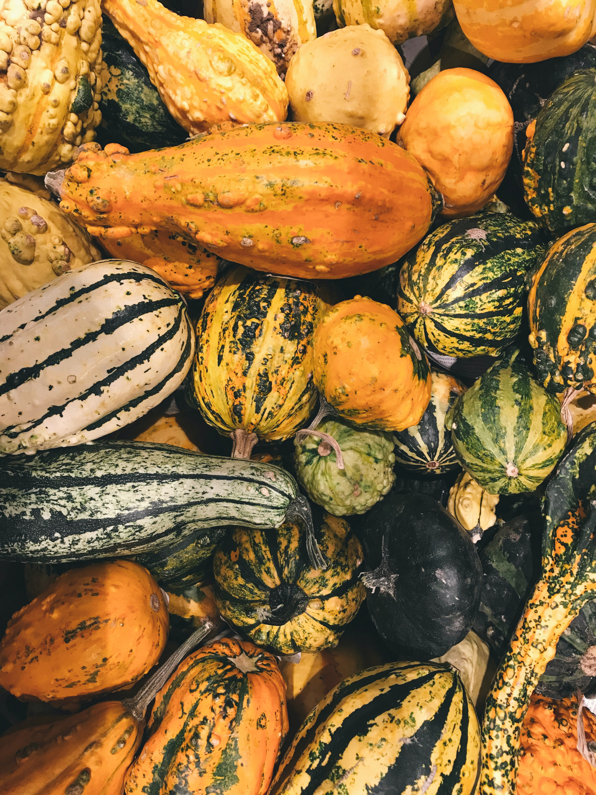

Sugar-Free Diet
Step One: Getting Rid of Temptation
You've gained a few pandemic pounds, and want to get back to your pre-quarantine self before you hit the beach this summer! To that end, you've started a sugar-free diet to try and trim up. The first step is getting rid of those pesky sweets! Click the images below to make those sugary dishes disappear and take their waistline-expanding temptation with them.

Step Two: Choosing the Right Foods
Now that you've removed the sugary demons of temptation from your pantry, you have to fill that empty space with healthy food! Click the button below to show some potential health foods to put in your pantry.


Step Three: Change Your Habits
The next step on the road to pandemic pound loss is changing your bad habits into good habits! Click each of the bad habits below to change them into more health-conscious ones.

Step Four: Staying Accountable
You've gotten rid of sugary foods. You've replaced them with healthy ones. You've even started to change your bad habits! Now, you need to tell someone that cares about you your resolve to stay sugar-free, so they can check in on your from time-to-time and help make sure you are staying on track! Click the button below to add a box in which to put your accountability partner's name.